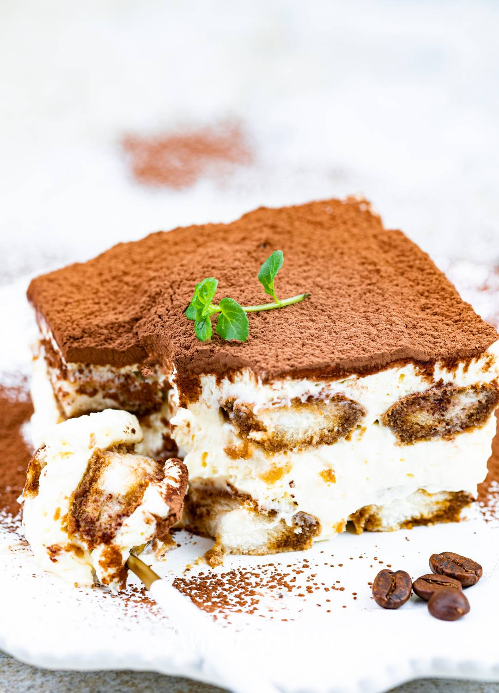

Tiramisu Recipe

Tiramisu is the epitome of indulgence, a perfect balance of creamy, rich flavors and delicate textures.
The combination of mascarpone cheese, whipped cream, and eggs creates a velvety smooth filling that melts in your mouth, while the coffee-soaked ladyfingers add depth and warmth.
A dusting of cocoa powder on top brings a touch of bitterness, perfectly contrasting the sweetness below.
The layers of flavor, from the bold espresso to the smooth creaminess, come together in every bite, making tiramisu a truly luxurious dessert.
It’s the ideal treat for special occasions, offering both elegance and comfort in one dessert.
Ingredients
- 1 1/2 cups strong brewed coffee, cooled
- 1/4 cup coffee liqueur (optional)
- 6 large egg yolks
- 3/4 cup granulated sugar
- 1 1/4 cups mascarpone cheese, softened
- 1 1/2 cups heavy cream
- 1 teaspoon vanilla extract
- 24 to 30 ladyfingers
- Cocoa powder for dusting
- Dark chocolate shavings (optional, for garnish)
Steps
- In a shallow dish, combine the cooled brewed coffee and coffee liqueur (if using).
- In a mixing bowl, whisk together the egg yolks and sugar until thick and pale.
- Fold the mascarpone cheese into the egg mixture until smooth and well combined.
- In a separate bowl, whip the heavy cream and vanilla extract until stiff peaks form.
- Gently fold the whipped cream into the mascarpone mixture, being careful not to deflate it.
- Quickly dip each ladyfinger into the coffee mixture (do not soak them), then layer them at the bottom of a serving dish.
- Spread half of the mascarpone mixture over the first layer of ladyfingers.
- Repeat with another layer of dipped ladyfingers and the remaining mascarpone mixture on top.
- Cover the dish and refrigerate for at least 4 hours, or overnight, to allow the flavors to meld.
- Before serving, dust the top with cocoa powder and garnish with chocolate shavings (optional).